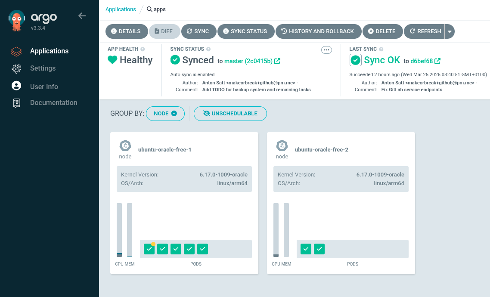
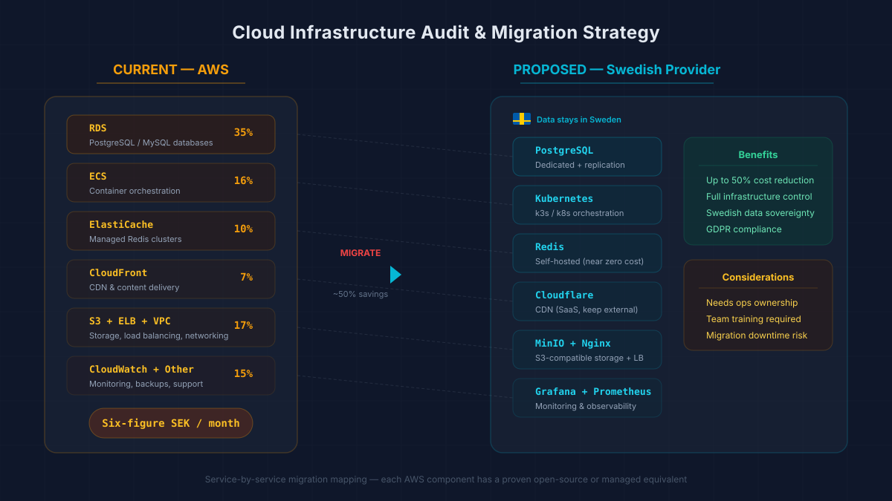
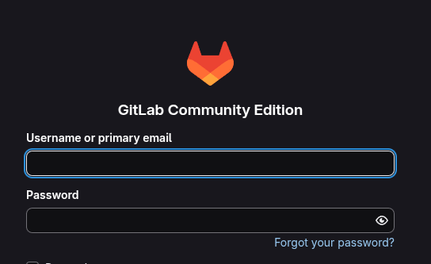
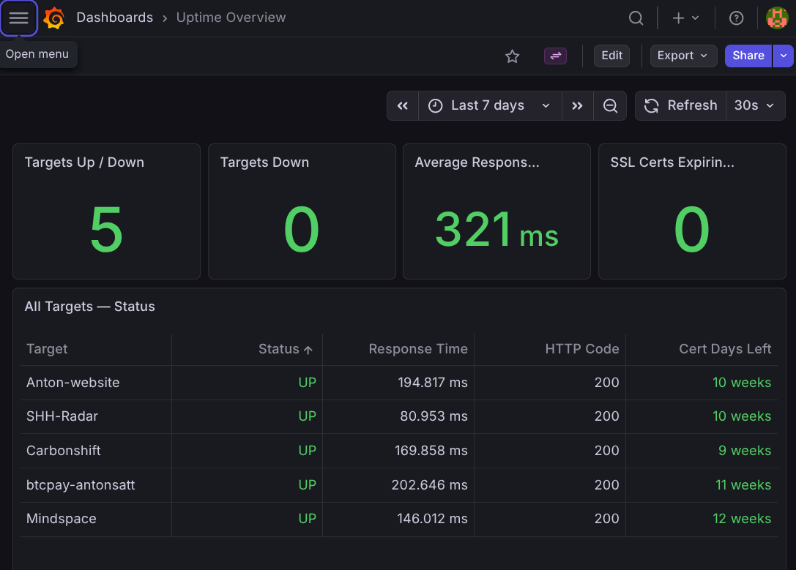
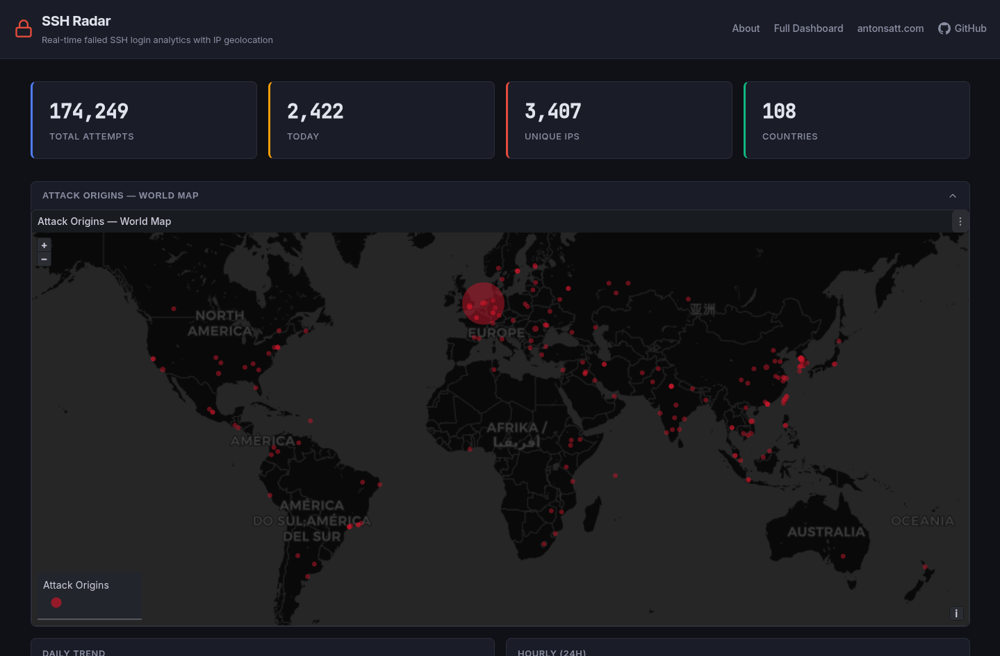
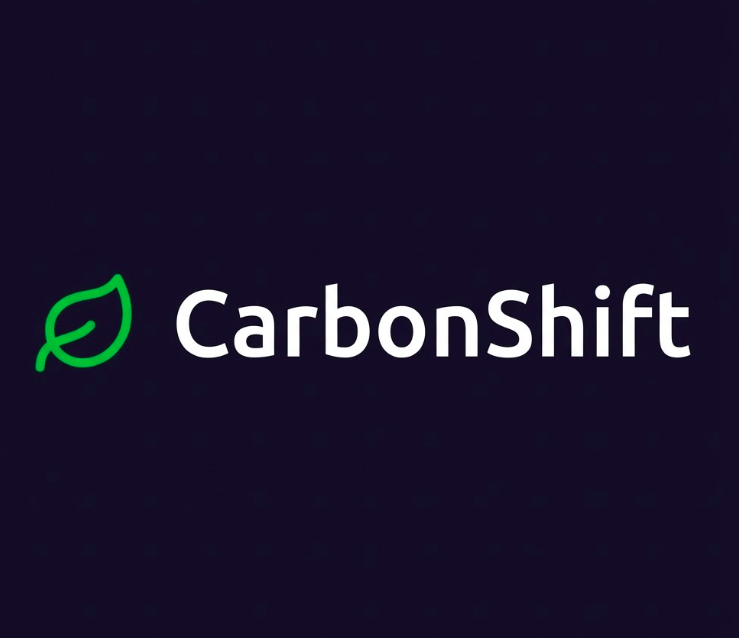

Mallo
mar – jun 2026Chas Challenge 2026. A Swedish community platform built by a 9-person cross-functional team for the "Tech for Good" theme. I owned DevOps: the Kubernetes deployment, GitLab CI/CD pipeline, and observability.
$ kubectl apply -f anton.yaml platformengineer.antonsatt.com/anton-satterkvist configured
Platform-focused DevOps engineer running real GitOps infrastructure. I build resilient platforms, automate the chaos, and keep delivery pipelines fast and boring.
apiVersion: antonsatt.com/v2
kind: PlatformEngineer
metadata:
name: anton-satterkvist
namespace: stockholm-se
labels:
program: chas-academy/devops-25-27
role: devops-developer
employer: samhall-ab
spec:
certifications:
- aws-certified-cloud-practitioner
- kubernetes-exam # june 2026
lia:
team: platform-engineering
company: samhall-ab
starts: 2026-11
openTo: 2027-graduate-roles
status:
phase: Running
nodes: 3
servicesInProd: 6
hackathonPodiums: 2I'm Anton Sätterkvist, a platform-focused DevOps engineer in the second year of a two-year DevOps program (2025 to 2027) at Chas Academy, and a firm believer in learning by doing.
These days that means running real infrastructure, not just studying it. I have passed my Kubernetes exam, hold the AWS Certified Cloud Practitioner, and I am building Platform Lab, a homelab Kubernetes platform with GitOps end to end (in build, kept private for now). Along the way I picked up two hackathon podium finishes (1st and 3rd place).
I am already working with Samhall AB as a DevOps developer through autumn 2026, then start my platform-engineer LIA there in November, helping build an internal developer platform on managed Kubernetes. I am also open to 2027 graduate roles in platform and cloud infrastructure.
Active in Stockholm's cloud-native and AI community: Cloud Native Stockholm, AI Engineering Stockholm, and AWS Summit Stockholm 2026. Co-organized Chas Hack 2026, the first student hackathon at Chas Academy.
| orchestration & gitops | Kubernetes (K3s), Flux, ArgoCD, Helm, Cilium |
|---|---|
| infrastructure as code | OpenTofu, Terraform, Ansible |
| ci/cd | GitLab CI, GitHub Actions |
| cloud | AWS, Oracle Cloud, Azure |
| observability | Grafana, Prometheus, Loki |
| platform services | cert-manager, Traefik |
| languages & tooling | Python, Bash, Docker, Linux, Git, Neovim, Claude Code |
My path through a two-year DevOps program, versioned like everything else I ship.
second year · graduating 2027
Deepening the platform: DORA metrics with Apache DevLake, an internal developer platform (Backstage), and my LIA at Samhall AB from November 2026.
Joining a greenfield platform team at Samhall AB to help build an internal developer platform on managed Kubernetes, with GitOps, infrastructure as code, and full observability. Focused on the platform foundation: orchestration, delivery pipelines, and developer experience. Already on board as a DevOps developer through autumn 2026, working with the team ahead of the platform placement.
Passed my Kubernetes exam (June 2026) and started Platform Lab: HA K3s across three bare-metal nodes, GitOps with Flux from a self-hosted GitLab, and cert-manager plus Traefik as version-pinned Helm releases. The roadmap continues through DORA metrics and an internal developer platform.
Ran two courses in parallel. DevOps: the full lifecycle from requirements and testing to packaging, deployment, monitoring, and container orchestration with Kubernetes. Agile Methods: driving projects with Scrum and CI/CD, and leading DevOps processes in agile teams. For the Chas Challenge 2026 capstone my team built Mallo, a Swedish community platform where I ran DevOps end-to-end on the school's Kubernetes cluster. I also competed in the GitLab DevSecOps Flow Hackathon with Vincent.
Worked with relational databases including SQLite and MariaDB. Learned schema design, SQL queries, data modeling, and database administration. Built SSH Radar, a real-time SSH attack monitoring platform with PostgreSQL.
Mastered Linux administration and Bash scripting. Earned AWS Certified Cloud Practitioner certification. Rebuilt CarbonShift as a full-stack application with React and Python, deployed live on Digital Ocean. Organized Chas Hack, the first student hackathon at Chas Academy.
Deep dive into Python scripting for automation. Explored AWS core services and set up monitoring stacks with Grafana & Prometheus. Built my first CI/CD pipelines. Won 1st place at AWS, HiQ, and Grafana hosted hackathon with CarbonShift.
Started the journey with Git/GitHub mastery and Linux fundamentals. Quickly moved into containerization with Docker, learning to build, ship, and run applications consistently across environments.
Applying theory to practice. Here are some of the things I've built.
Chas Challenge 2026. A Swedish community platform built by a 9-person cross-functional team for the "Tech for Good" theme. I owned DevOps: the Kubernetes deployment, GitLab CI/CD pipeline, and observability.
Homelab Kubernetes Platform. An internal platform on three bare-metal nodes: HA K3s with embedded etcd, GitOps via Flux from a self-hosted GitLab, and cert-manager plus Traefik as version-pinned Helm releases. A sanitized public showcase repo is coming once secrets management is in place.

Personal Project. Production K3s cluster on Oracle Cloud (within Oracle's always-free resource limits) with ArgoCD GitOps, automatic SSL, and Ansible provisioning. Hosts 6 services.

Informal. Infrastructure work helping a small dev team get a handle on their AWS setup: cost drivers, transparency, and data-sovereignty options.

Personal Project. Self-hosted GitLab CE instance running in Docker on a cloud VPS. Features resource-optimized configuration, HTTPS via Let's Encrypt, and Nginx reverse proxy.

Personal Project. Self-hostable uptime monitoring tool to make sure your projects stay online. Open-source and easy to deploy.

Personal Project. Real-time monitoring platform that tracks failed SSH brute-force login attempts on a Linux server. Features live feed, Grafana dashboards, and geolocation data from real attacks.
Event Organizer. Co-organized the first student hackathon at Chas Academy with the theme "Simplify". Managed planning, team formation, Discord setup, and mentored participants throughout the event.


Team Chaos (1st Place). A Grafana Dashboard that tracks CO2 emissions and electricity costs for cloud servers. Helps companies identify cheaper and more emission-efficient regions to save money and the planet.


Full DevOps pipeline implementation for a Discord bot. Automated testing, building, and deployment using GitHub Actions.

Self-hosted cloud storage solution using Docker Compose. Focus on data persistence, networking, and ease of deployment.
Have a question or want to discuss a project? I'm always open to new opportunities.
$ kubectl get availability